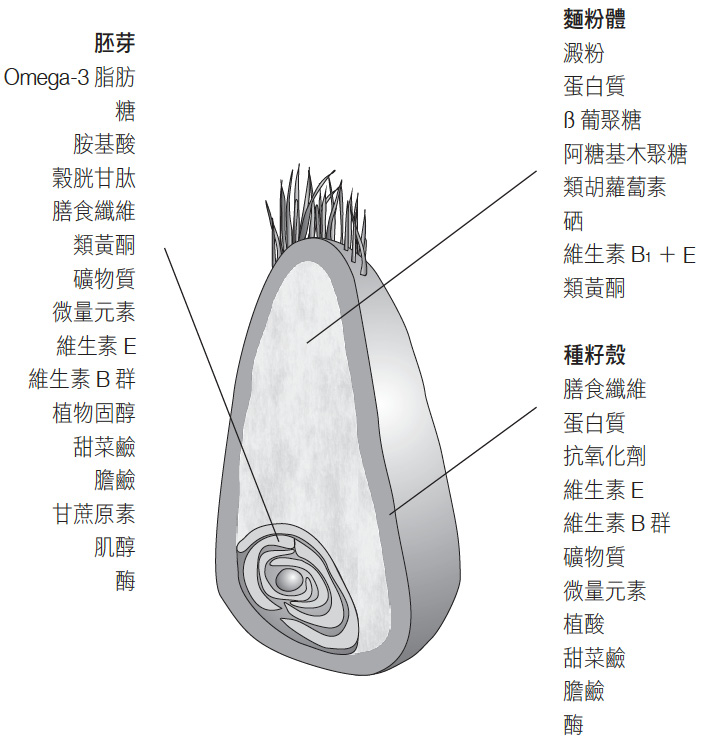
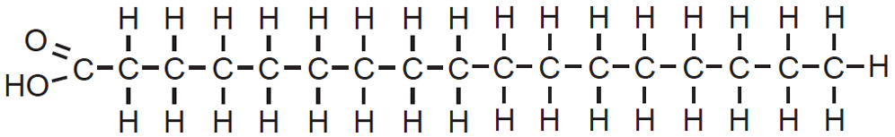
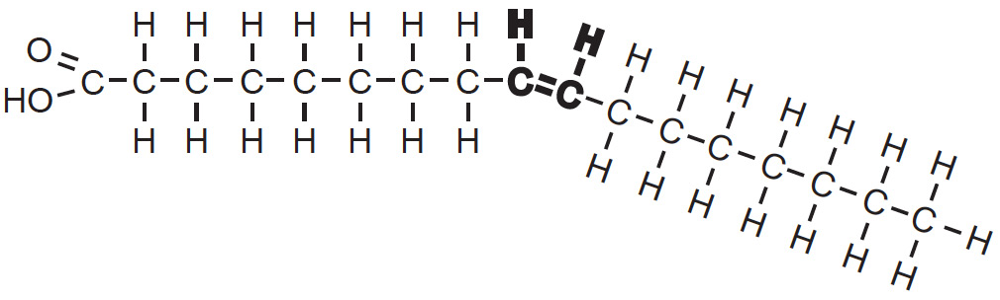
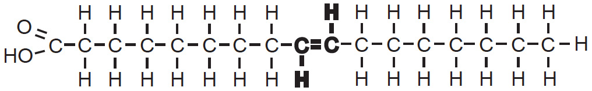
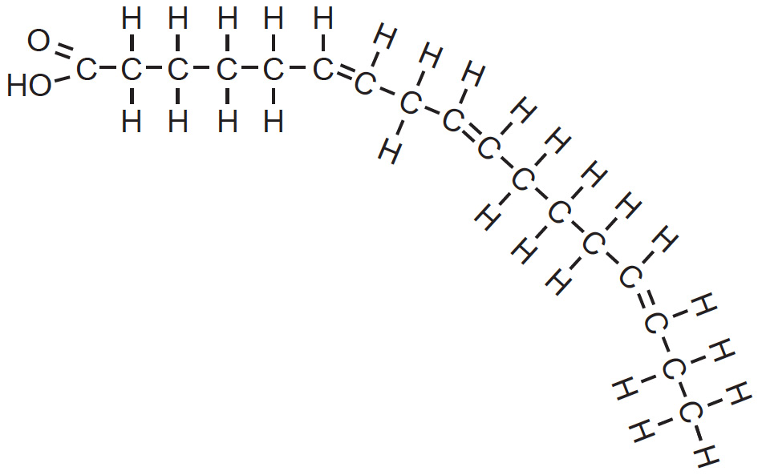
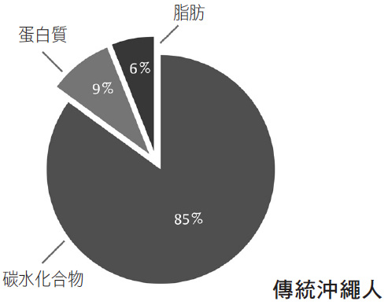
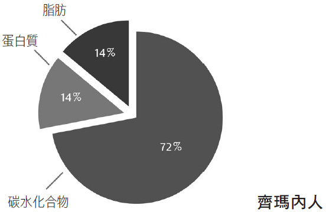
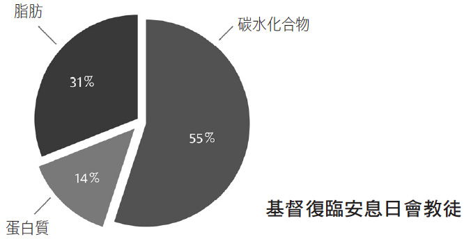
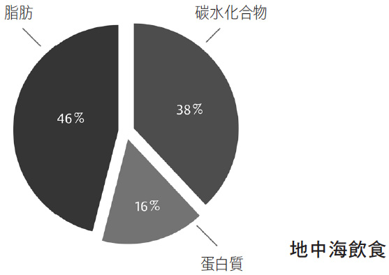

01 / START SMALL
下一餐，只改一件容易坚持的事
让主餐完整一点
选一份蛋白质食材，搭配蔬菜与主食；把油、酱汁和饮料一起考虑。
先处理容易忽略的量
称一次烹调油、坚果或奶咖中的奶。以后估份量就有自己的参照。
留下一条真实观察
记下吃了多少、怎样做、是否好吃，以及餐后多久又饿。一次记录只是一条线索。
02 / THEMES
六个主题，串起全书
本书反复追问的，是食物以什么形式进入身体、能否让人满足，以及这种吃法能不能持续。下面把跨章节的内容放在同一个实际问题里。
先有蛋白质食材，再观察饱腹感
书中观点：作者用“蛋白质杠杆”解释，蛋白质被能量密集的食物稀释后，人可能为了满足需求吃进更多总能量。他进一步区分蛋白质来源，偏向豆类、鱼与原味酸奶，并讨论 mTOR、年龄和生长之间的关系。
放进一餐
米饭或面条旁边配豆腐、豆类、蛋、鱼、禽肉或适合自己的乳品。记录实际份量；零食包装上的“高蛋白”仍要与总能量、糖和脂肪一起看。
阅读校准
饱腹感是多因素结果，不能保证加蛋白质就自动减脂。书中的老化机制也不足以证明训练者应少吃蛋白质。需求要结合年龄、训练与健康情况；蔬菜和坚果不能按同等重量替代一份高蛋白食材。
记录问题：这一餐蛋白质来自哪里？同样的份量，换成豆腐或鱼后，饱腹感与口感有什么变化？
把完整水果、豆类与全谷物放回餐盘
书中观点：作者把“固体还是液体、加工形式、纤维含量、消化速度”作为识别碳水的线索。整颗水果和果汁，完整谷粒与精细面粉，即使名字相近，吃进去的速度、纤维与份量也不同。
放进一餐
先从把一部分精制主食换成燕麦、糙米或豆类开始，按口感与消化耐受逐步调整。水果直接吃；饮料单独记，不把果汁视为等量水果。
阅读校准
GI 反映特定测试条件下的平均反应，实际一餐还受份量、烹调和混合食物影响。米饭与土豆可以组成合理餐食。书中的碳水／纤维比例只是筛选线索，不是通用健康评分。WHO 来源 ↗

记录问题：这一餐主食是生重还是熟重？有没有蔬菜、豆类或全谷物？换一种做法后还好吃吗？
看用什么替换，也看用了多少
书中观点：作者用橄榄油、坚果和鱼反对“一律怕脂肪”，强调不同脂肪酸与食物整体的差别。他对黄油、乳酪和椰子油较宽容，也对 Omega-3 的抗炎和体重作用给出了积极解释。
放进一餐
把部分黄油、肥肉等来源的脂肪换成适量植物油、坚果或鱼；记录煎炒时真正用掉的油。营养来源改善与总能量控制可以一起做。
阅读校准
当前 WHO 建议限制饱和脂肪并以不饱和脂肪等替换，避免工业反式脂肪。橄榄油和坚果仍提供能量；鱼油补剂没有获得“吃了就瘦”的结论，食物与补剂也不能直接互换。看证据校准 ↓

BH6054_028

BH6054_029

BH6054_030

BH6054_031
以上四图来自原书第 8 章“脂肪酸的基本知识”，原图署名 Sina Bartfeld。分子形状帮助区分类型；健康影响仍需看人体研究、摄入量与替换的食物，不能仅凭弯折程度判断。
记录问题：这一餐用了多少油？鱼是清蒸、烘烤还是裹粉油炸？坚果是加餐还是替换了其他点心？
水、奶、咖啡与酒，分别记录
书中观点：作者反对经常大量喝含糖饮料和果汁；将原味酸奶、牛奶分别讨论，对过滤咖啡和茶较积极，并保留了少量饮酒可能有益的旧观点。
放进一天
日常解渴先选水。奶咖记录杯量、奶和糖浆；乳品按自己的耐受与整体营养安排。咖啡、茶记录饮用时间与对睡眠的影响。
阅读校准
咖啡与较低死亡率的关联不等于人人都要喝；牛奶也不能凭单一研究定为有害。不为健康开始饮酒。WHO 指出没有已证实的无健康风险饮酒量。WHO 酒精说明 ↗
记录问题：今天饮料里有哪些奶、糖、酒精？喝完后的睡眠、胃部或饥饿感有没有变化？
食物组合比一个固定配比更有用
书中观点：作者用四种差异很大的饮食构成说明：健康饮食不只有一种宏量营养配比。共同线索往往是较完整的食物、植物性食材和较少高度精制产品。

第 3 章 · BH6054_014

第 3 章 · BH6054_015

第 3 章 · BH6054_016

第 3 章 · BH6054_017
四张饼图来自原书第 3 章，原图署名 Bas Kast；百分比为书中示例的能量占比。群体的生活方式和环境同时不同，不能从这些图推出因果关系，也不应照搬为个人目标。
放进厨房
让蔬菜、豆类、全谷物与适量蛋白质食材更容易取得。冷冻蔬菜、无添加糖酸奶、低盐豆罐头等也能提供便利；烹煮、冷冻、发酵本身不等于“不健康”。
阅读校准
NIH 的短期住院交叉试验中，20 名成人在研究提供的超加工饮食阶段吃进更多能量并增重；这支持关注整体食物环境，尚不能说明每一种包装食品或添加剂都会导致同样结果。Hall 2019 原研究 ↗
记录问题：今天最容易随手吃到的是什么？提前备一份什么，会让下一餐更方便？
把作息、饥饿和可持续性一起观察
书中观点：作者鼓励小规模尝试与自我观察，也推崇固定进食时段和夜间不进食。他的补剂章节对维生素 D 的普遍推荐，以及对禁食、自噬的部分描述，超出了可直接应用的证据。
放进记录
先记录一周大致用餐时间、饥饿与睡眠，再选一个小变化，例如把深夜零食提前。若记录份量，标注估计或称重，允许不完整的记录。
阅读校准
2022 年的一项 12 个月随机试验中，在同样限制能量的基础上，再加限定进食窗口并没有显著多减重。补剂是否需要，应看具体缺乏风险或适应证。糖尿病用药者、孕哺期、未成年人或有进食障碍史者，不自行试长时间禁食。原研究 ↗
记录问题：晚餐较晚是因为工作、运动还是饥饿？改变后，精神、训练和睡眠是否更好？
03 / CHAPTER BY CHAPTER
12 章，带着具体问题回读
以下为独立改写的章节提要。展开查看“能用的部分”与“需要保留的边界”；原书中的标题使用简体字便于检索。
01蛋白质 I：让人苗条的蛋白质效应
核心：从昆虫实验到人类干预，作者以蛋白质需求和“蛋白质稀释”解释饥饿与多吃。
能用：不要让一餐只剩精制主食与油；在主餐放入能辨认、能计量的蛋白质食材，再观察饱腹感。
边界：实验中的平均效果不是个人减重承诺，“高蛋白”也不能抵消无限制的总能量摄入。回到蛋白质主题 ↑
02蛋白质 II：成长和老化的驱动引擎
核心：讨论 mTOR、IGF-1、年龄差异，以及植物蛋白、鱼、红肉和发酵乳品的来源区别。
能用：蛋白质来源轮换，增加豆类与豆制品，减少依赖火腿、香肠等加工肉。
边界：不能把小鼠寿命或机制链条直接换算成人类蛋白质上限；增肌、衰弱老人等情境应另看需求。酸奶或益生菌不能保证减肥、逆龄。回到蛋白质主题 ↑
03插曲：你是理想饮食的关键佐料
核心：对照低脂与低碳观点，比较多个人群的食物构成，提出不存在人人适用的完美配比。
能用：先比较食材、加工形式和能否坚持，再比较宏量营养比例；根据训练、饥饿、时间和口味调整。
边界：人群观察无法排除活动量、吸烟或社会环境等差异。四张饼图不是四份经过随机比较的减脂处方。查看原书四图 ↑
04碳水化合物 I：糖，诱人又危险的双面人
核心：把糖的形式、摄入速度与剂量连起来，讨论大量含糖饮料、肝脂肪与胰岛素反应，并区别完整水果。
能用：先减少经常喝的含糖饮料；蜂蜜、糖浆和果汁里的游离糖也要一起考虑。甜食可以记录份量，不必把每次吃甜食变成失败。
边界：高剂量或过量供能实验，不能推出水果或少量糖必然造成同样伤害。回到碳水主题 ↑
05碳水化合物 II：为什么有些人只对低碳饮食有反应
核心：作者围绕胰岛素抵抗解释个体差异，提出可以尝试降低碳水并观察效果，同时关注来源质量。
能用：若调整主食，连同蔬菜、蛋白质、用油和零食一起记录，比较数周的可持续性，避免只看短期水分变化。
边界：DIETFITS 未发现基线胰岛素分泌能预测哪种饮食减重更多；不能仅凭腰围诊断胰岛素抵抗，也不要自行停用糖尿病药。书中饮酒建议不采纳。DIETFITS ↗
06碳水化合物 III：这样辨识健康的碳水化合物
核心：从固液形态、加工、膳食纤维和 GI 四个角度选食，讨论全谷物、豆类、肠道菌群与食物结构。
能用：选主食时看看完整谷物和纤维，增加豆类；从少量开始，以消化耐受与口味为反馈。
边界：GI 或纤维比例不能独立评价整餐；“无麸质”也不自动代表更健康，确有医学需要者另论。查看谷粒结构图 ↑
07插曲：饮料——牛奶，咖啡，茶和酒
核心：分开审视不同饮品，关注研究资助、发酵乳品、咖啡制备方法与个体反应。
能用：把奶、糖浆、咖啡因饮用时间和酒精分别记录，避免只写“一杯饮料”。
边界：不凭观察研究给咖啡赋予延寿保证，不要求健康人戒牛奶；酒精的风险不能被旧有心血管关联抵消。回到饮料主题 ↑
08脂肪 I：探索脂肪世界，以橄榄油为例
核心：从橄榄油与地中海饮食转入脂肪酸结构，强调不饱和脂肪与工业反式脂肪的区别。
能用：选适合烹调的植物油，称一次实际用量；关注“替换了什么”，不要只给原来的餐食再加油。
边界：细胞里的抗炎或 mTOR 效果不等同于人体抗老疗效；橄榄油不能代替药物，也不必凭“喝到咳嗽”决定健康价值。查看脂肪酸原图 ↑
09脂肪 II：饱和脂肪酸——棕榈油，黄油和乳酪
核心：通过过量喂养试验与乳酪的食物基质讨论，指出相同能量与相同饱和脂肪含量，并不代表食物完全相同。
能用：同时看乳酪的份量、盐和整日饱和脂肪来源；把替换方案放到真实餐食里比较。
边界：这不构成黄油或椰子油可以无限量吃的依据。仍以减少饱和脂肪、优先不饱和脂肪的公共卫生建议为参考。WHO 来源 ↗
10脂肪 III：油脂丰富的鱼和 Omega-3 脂肪酸让人瘦
核心：区别鱼与高度加工鱼制品，介绍 EPA、DHA、植物来源脂肪酸和炎症机制。
能用：将鱼作为蛋白质来源之一，留意裹粉、油炸与酱汁；核桃、亚麻籽也可作为多样化食物的一部分。
边界：标题中的“让人瘦”是作者的强表述，本页不把它当成已证实效果。植物 ALA 与海洋 EPA／DHA 不完全等同，鱼油不是减肥方案。看 Omega-3 校准 ↓
11不要服用维生素丸！除了……
核心：批评用复合维生素代替饮食的想法，但将维生素 D 作为普遍例外。
能用：先审视实际饮食与已知缺乏风险；记录补剂名称、实际剂量与使用缘由，避免多种产品重复。
边界：本页不沿用“所有人每日补 D”的建议。VITAL 的一般中老年人群主要终点没有支持普遍补充能预防癌症或心血管事件；已确诊缺乏及特定人群另行评估。VITAL 原研究 ↗
12最佳吃饭时间和最有效的禁食方法
核心：讨论昼夜节律、限时进食、禁食与自噬，建议把规律进食融入日常。
能用：记录起床、用餐和睡前加餐的关系，找到兼容工作、运动和睡眠的规律。
边界：小鼠限时喂养与人体长期结局不同；自噬机制不等于需要长时间不吃饭，也不能把禁食当成治疗糖尿病或风湿的方法。人体随机试验 ↗
04 / TAKE IT INTO THE KITCHEN
后记的 12 条建议，怎样留下来用
沿用原书后记的顺序重新概括；涉及酒精、Omega-3 减重与普遍补充维生素 D 的部分，按证据调整。
- 多选较完整的食物。为忙碌时准备一份方便的饭或加餐。
- 让植物性食材更有存在感。把蔬菜、豆类与全谷物做得好吃。
- 蛋白质来源多样化。鱼、豆制品、禽肉等轮换，减少加工肉。
- 乳品按耐受和整体搭配选择。原味酸奶可选，牛奶并非必须排除。
- 减少游离糖，避免工业反式脂肪。先看饮料、日常甜点与标签。
- 给脂肪留位置，也记份量。优先不饱和脂肪来源。
- 把低碳当成可选方法。与其他合理吃法比较，重视食物质量和坚持程度。
- 主餐安排蛋白质。观察饥饿与满足感，不追求无限加量。
- 找到规律的进食节奏。不机械规定人人使用同一窗口。
- 把富含 Omega-3 的食物纳入多样饮食。不把鱼油或抗炎机制当作减肥保证。
- 补剂围绕明确需要。不照搬人人补维生素 D 的处方。
- 把吃得开心写进目标。记录口感、做法与一起吃饭的体验。
05 / READ WITH CONTEXT
四处要放慢一点读
观察性研究提供线索，随机试验回答特定干预问题；动物与细胞实验帮助解释可能机制。它们各自能回答的问题不同。
少量饮酒是否有益
书中：保留少量酒可能改善某些代谢或心血管指标的观点。
阅读校准：WHO 指出，没有证实酒精对健康无风险的阈值，可能的心血管关联不能视为抵消癌症风险的证据。
行动：不为健康开始饮酒 · 查看来源 ↗是否人人都应补维生素 D
书中：将维生素 D 作为几乎所有人的补剂例外。
阅读校准：VITAL 纳入 25,871 名美国一般中老年人，每日 2000 IU 的维生素 D 未显著降低浸润性癌症或主要心血管事件发生率。结果不能外推为缺乏者无需治疗。
行动：按风险或适应证评估 · 查看原研究 ↗Omega-3 是否能让人瘦
书中：以炎症、下丘脑与饱腹机制推导体重效果。
阅读校准：机制不是减重效果。VITAL 的 Omega-3 试验主要考察癌症与心血管疾病，并未证明减重；其主要复合心血管终点和癌症终点也未显著降低。部分次要终点的结果不代表普遍获益。
行动：食物多样化，不把鱼油当减肥剂 · 查看原研究 ↗是否有某一种吃法必然更好
书中：偏向部分人尝试低碳，也对限时进食较乐观。
阅读校准：DIETFITS 的健康低脂与健康低碳组在 12 个月减重上无显著差异；另一项 139 人试验中，在限制能量外增加限时进食没有显著额外减重。
行动：比较可持续性与反馈 · 查看原研究 ↗06 / FOOD JOURNAL
我的饮食日志
记事实，也记口感。不必每餐都完美计量；先留下一条自己能回看的记录。记录只保存于当前浏览器和当前本地地址，更换端口或清除浏览器数据后不会自动出现，建议定期导出备份。
已经记下的餐食 0
还没有记录。从今天的一餐开始，实际保存后会显示在这里。
可选项可以留空，无法称重时注明“估计”。这份记录用于回看习惯，不能单凭一餐确定身体变化的原因。
SOURCES / GO BACK TO THE EVIDENCE
原书与核对来源
书本内容依据用户提供的《吃的科學——對抗肥肉、疾病、老化的救命營養新知》EPUB（Bas Kast），按第 1—12 章及后记整理。这里的图保留原文件名与章节说明，仅用于当前本地阅读预览。完整论证与书后参考文献请回原书核对。
- WHO · Healthy diet
用于核对完整食物、果蔬、全谷物、纤维、游离糖、饱和及反式脂肪等基本方向。
- WHO Europe · No level of alcohol consumption is safe for our health（2023）
用于校准书中的饮酒获益推断；不能把酒当作健康干预。
- Manson 等 · VITAL：Vitamin D Supplements and Prevention of Cancer and Cardiovascular Disease（2019）
NEJM · DOI：10.1056/NEJMoa1809944。主要终点未见显著预防效果；并非确诊缺乏者治疗试验。
- Manson 等 · VITAL：Marine n−3 Fatty Acids and Prevention of Cardiovascular Disease and Cancer（2019）
NEJM · DOI：10.1056/NEJMoa1811403。每日 1 g 海洋 Omega-3 的主要复合终点结果，不是鱼油减重试验。
- Gardner 等 · DIETFITS 随机试验（2018）
JAMA · DOI：10.1001/jama.2018.0245。609 名无糖尿病的超重或肥胖成人，健康低脂与健康低碳组 12 个月减重无显著差异。
- Hall 等 · Ultra-Processed Diets Cause Excess Calorie Intake and Weight Gain（2019）
Cell Metabolism · DOI：10.1016/j.cmet.2019.05.008。20 人、每种饮食两周的住院随机交叉试验，能回答短期摄入与体重问题。
- Liu 等 · Calorie Restriction with or without Time-Restricted Eating in Weight Loss（2022）
NEJM · DOI：10.1056/NEJMoa2114833。139 名肥胖成人、12 个月；比较两种均限制能量的方案，不能代表所有进食窗口或人群。
以上外部来源于 2026.10.29 核对。这里按问题选择研究，未声称穷尽所有饮食与营养证据。原书图的章节、署名与用途，已直接标在相邻图注中。